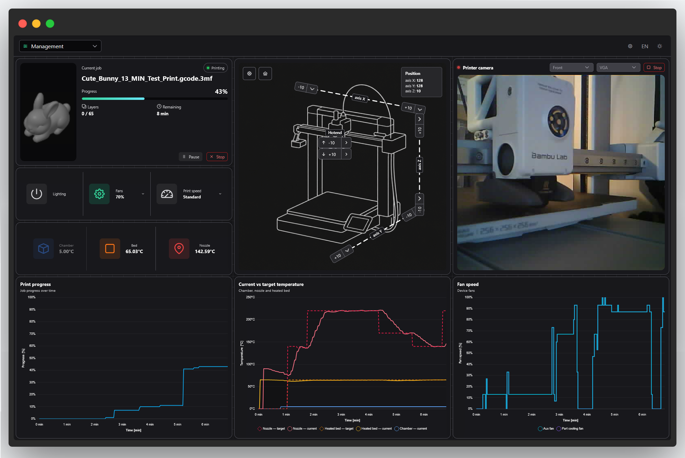
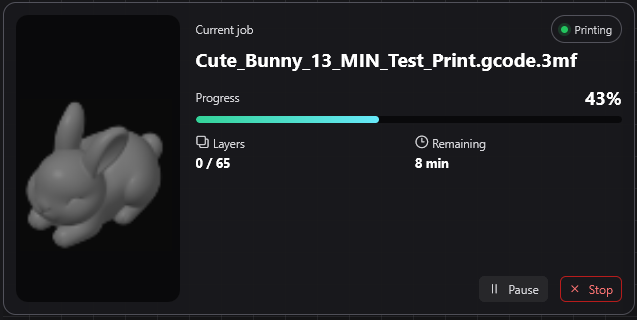
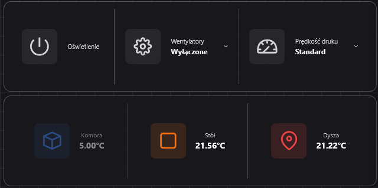
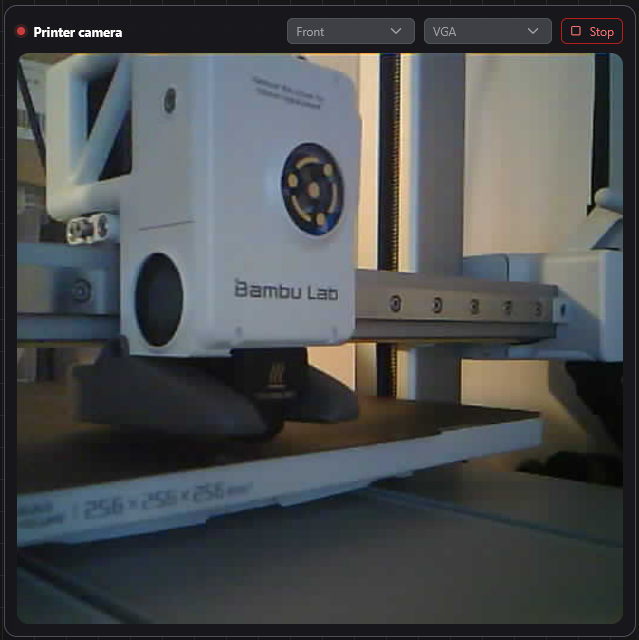
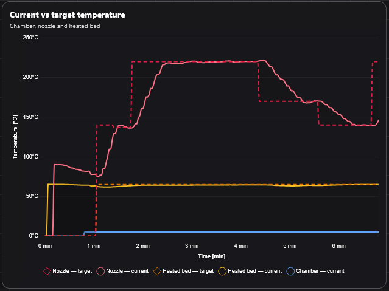

Management page
The Management page (route /management) is the printer
control and monitoring surface: current print job status, quick
controls (light, fans, print speed), a jog/navigation panel, a live
camera preview, and telemetry charts (progress, temperatures, fan
speeds). It talks to mqtt-puppeteer for printer state
and commands (over polled REST — not Socket.IO), and to
video-service-hub for the live preview stream.
Overview

Widgets are arranged in a draggable, resizable grid (angular-gridster2). Each widget corresponds to one of the components documented below.
Layout, theme & language
Rearranging widgets
Open the gear/settings menu in the top bar and choose Edit layout. While editing, every widget can be dragged to a new position, resized from any of its eight edges, or moved with the arrow keys. Choose Apply layout to leave edit mode. The chosen positions and sizes are saved to your browser's local storage and restored on your next visit — a Restore original layout option resets everything back to the defaults.
The grid uses a fixed 12-column layout with a fixed row height; resizing snaps to that grid rather than being free-form pixel resizing.
Light / dark mode
The moon/sun icon in the top bar toggles between light and dark theme. Unlike language, theme defaults to your operating system's light/dark preference on first visit, then remembers your explicit choice. The telemetry charts re-color themselves immediately when you switch theme.
Language (PL / EN)
The language toggle in the top bar switches every label, button, and chart axis between Polish and English immediately, with no page reload. Your choice is remembered for future visits.
The dashboard's own default language is Polish the first time you open it on a given browser (this documentation site itself defaults to English, independently of that).
Current print job

Shows the active print's thumbnail, a status badge (printing, paused, completed, cancelled, or error), the job name, a progress bar, the current/total layer count, and the estimated remaining time.
Displayed information
- Job thumbnail
- Status badge
- Job name
- Progress bar (percentage)
- Layer counter (current / total)
- Estimated remaining time
Interactions
- Pause — pauses the active print
- Resume — shown instead of Pause while paused
- Stop — cancels the print
Pause and Stop are disabled once the job reaches a terminal state (completed, cancelled, or error).
Customization
None beyond the shared widget repositioning/resizing described in Layout, theme & language above — the widget itself has no settings of its own.
Printer quick controls

Three toggle buttons for common in-print adjustments, each opening a small popover for fine control.
Displayed information
- Chamber light on/off state
- Fan on/off state and current speed
- Active print-speed mode
Interactions
- Light — one click toggles the chamber light on/off
- Fans — opens a popover with an on/off toggle and a 10%-step speed slider
- Print speed — opens a popover to choose Silent, Standard, Sport, or Ludicrous
Customization
Turning fans off and back on restores the last speed you had set, so you don't have to re-pick it every time. No other persisted settings.
Printer navigation

An SVG overlay on a bed diagram for jogging the toolhead and homing the printer, with a fully user-calibratable axis layout.
Displayed information
- Bed diagram with X / Y / Z axis lines
- Current position readout (draggable to any corner)
- Jog disabled/greyed out when the printer's position is unknown (not yet homed)
Interactions
- Jog split-buttons at each axis end — click for the default step, use the dropdown for alternate step sizes
- Hotend up/down split-buttons
- Home — sends the physical homing command
Customization
Open the gear icon on the widget for a calibration panel that lets you:
- Click-place where each axis's positive/negative markers and the hotend marker sit on the bed image (drag to reposition, arrow keys to nudge, Enter to confirm, Escape to cancel)
- Choose the primary jog step size
- Choose where the position readout panel is anchored (top-left, top-right, bottom-left, bottom-right)
Reset axes restores the default calibration. This calibration is purely a local display preference — it does not change anything on the printer itself.
Live preview

An embedded MJPEG camera stream from one of your configured cameras, without leaving the Management page.
Displayed information
- Live status dot (streaming / ready / offline)
- Live MJPEG image, or an offline placeholder when inactive
Interactions
- Camera source selector (disabled while a stream is active)
- Resolution selector (disabled while a stream is active)
- Start / Stop button
If a frame fails to load, the widget automatically retries up to 5 times before showing a "failed to load" message.
Customization
Choice of camera source and resolution before starting the stream. No further persisted settings.
Telemetry chart

Read-only line charts tracking printer values over time. The Management page uses this widget three times: print progress, temperatures (nozzle/bed/chamber, target vs. actual), and fan speeds.
Displayed information
- Time-series line chart with a legend when more than one value is plotted
- Hover shows a vertical guide line and the exact values at that point
Interactions
Hover/point the pointer over the chart to inspect values. No editable controls — it is read-only.
Customization
Colors automatically switch between light and dark palettes with the global theme toggle; axis and tooltip labels switch with the language toggle. No other settings.
Panel zarządzania
Panel zarządzania (trasa /management) to główny widok
sterowania i monitorowania drukarki: status bieżącego zadania druku,
szybkie sterowanie (światło, wentylatory, prędkość druku), panel
nawigacji/jog, podgląd kamery na żywo oraz wykresy telemetrii
(postęp, temperatury, prędkości wentylatorów). Komunikuje się z
mqtt-puppeteer w zakresie stanu i poleceń drukarki
(poprzez odpytywanie REST, a nie Socket.IO) oraz z
video-service-hub w zakresie strumienia podglądu na żywo.
Przegląd
Widżety są rozmieszczone w przeciąganej, skalowalnej siatce (angular-gridster2). Każdy widżet odpowiada jednemu z komponentów opisanych poniżej.
Układ, motyw i język
Zmiana układu widżetów
Otwórz menu ustawień (ikona koła zębatego) w górnym pasku i wybierz Edytuj układ. W trybie edycji każdy widżet można przeciągnąć w nowe miejsce, zmienić jego rozmiar z dowolnej z ośmiu krawędzi lub przesunąć strzałkami. Wybierz Zatwierdź układ, aby wyjść z trybu edycji. Wybrane pozycje i rozmiary są zapisywane lokalnie w przeglądarce i przywracane przy kolejnej wizycie — opcja Przywróć domyślny układ resetuje wszystko do wartości domyślnych.
Siatka ma stałą liczbę 12 kolumn i stałą wysokość wiersza — zmiana rozmiaru „przyciąga” do siatki zamiast dowolnego, pikselowego skalowania.
Tryb jasny / ciemny
Ikona księżyca/słońca w górnym pasku przełącza między motywem jasnym a ciemnym. W odróżnieniu od języka, motyw domyślnie dopasowuje się do preferencji systemu operacyjnego przy pierwszej wizycie, a następnie zapamiętuje wybór użytkownika. Wykresy telemetrii od razu zmieniają kolorystykę po przełączeniu motywu.
Język (PL / EN)
Przełącznik języka w górnym pasku zmienia natychmiast wszystkie etykiety, przyciski i opisy osi wykresów między polskim a angielskim, bez przeładowania strony. Wybór jest zapamiętywany na kolejne wizyty.
Domyślnym językiem samego dashboardu jest polski przy pierwszym otwarciu w danej przeglądarce (ta strona dokumentacji domyślnie ustawia angielski, niezależnie od tego).
Bieżące zadanie druku
Pokazuje miniaturę aktywnego wydruku, etykietę statusu (drukowanie, wstrzymano, zakończono, anulowano lub błąd), nazwę zadania, pasek postępu, licznik warstw (bieżąca / łączna) oraz szacowany pozostały czas.
Wyświetlane informacje
- Miniatura zadania
- Etykieta statusu
- Nazwa zadania
- Pasek postępu (procent)
- Licznik warstw (bieżąca / łączna)
- Szacowany pozostały czas
Interakcje
- Wstrzymaj — wstrzymuje aktywny wydruk
- Wznów — wyświetlany zamiast „Wstrzymaj” podczas pauzy
- Zatrzymaj — anuluje wydruk
Przyciski „Wstrzymaj” i „Zatrzymaj” są nieaktywne, gdy zadanie osiągnie stan końcowy (zakończono, anulowano lub błąd).
Dostosowanie
Brak poza wspólnym przenoszeniem/zmianą rozmiaru widżetu opisanym w sekcji Układ, motyw i język powyżej — sam widżet nie ma własnych ustawień.
Szybkie sterowanie drukarką
Trzy przyciski przełączające do najczęstszych regulacji w trakcie druku, każdy otwiera mały popover z dokładniejszą kontrolą.
Wyświetlane informacje
- Stan włączenia światła w komorze
- Stan wentylatorów i bieżąca prędkość
- Aktywny tryb prędkości druku
Interakcje
- Światło — jedno kliknięcie włącza/wyłącza światło w komorze
- Wentylatory — otwiera popover z przełącznikiem wł./wył. i suwakiem prędkości w krokach co 10%
- Prędkość druku — otwiera popover z wyborem trybu Cichy, Standardowy, Sportowy lub Szalony
Dostosowanie
Wyłączenie i ponowne włączenie wentylatorów przywraca ostatnio ustawioną prędkość, więc nie trzeba wybierać jej za każdym razem od nowa. Brak innych zapamiętywanych ustawień.
Nawigacja drukarki
Nakładka SVG na schemacie stołu do przesuwania głowicy (jog) i bazowania drukarki, z w pełni kalibrowalnym przez użytkownika układem osi.
Wyświetlane informacje
- Schemat stołu z liniami osi X, Y, Z
- Odczyt bieżącej pozycji (można przeciągnąć w dowolny róg)
- Sterowanie jog jest wyszarzone, gdy pozycja drukarki jest nieznana (przed bazowaniem)
Interakcje
- Przyciski jog na końcu każdej osi — kliknięcie wykonuje domyślny krok, rozwijana lista pozwala wybrać inny krok
- Przyciski góra/dół dla hotendu
- Bazuj — wysyła fizyczne polecenie bazowania
Dostosowanie
Ikona koła zębatego na widżecie otwiera panel kalibracji, który pozwala:
- Kliknięciem ustawić, gdzie na obrazie stołu znajdują się znaczniki dodatnie/ujemne każdej osi oraz znacznik hotendu (przeciągnij, by przesunąć, strzałki do drobnej korekty, Enter zatwierdza, Escape anuluje)
- Wybrać domyślny krok jog
- Wybrać, gdzie zakotwiczony jest panel odczytu pozycji (góra-lewo, góra-prawo, dół-lewo, dół-prawo)
Resetuj osie przywraca domyślną kalibrację. Ta kalibracja jest wyłącznie lokalnym ustawieniem wyświetlania — nie zmienia niczego na samej drukarce.
Podgląd na żywo
Osadzony strumień MJPEG z jednej ze skonfigurowanych kamer, bez opuszczania panelu zarządzania.
Wyświetlane informacje
- Kropka statusu na żywo (transmisja / gotowe / offline)
- Obraz MJPEG na żywo lub zastępcza grafika, gdy podgląd jest nieaktywny
Interakcje
- Wybór źródła kamery (nieaktywny podczas trwającej transmisji)
- Wybór rozdzielczości (nieaktywny podczas trwającej transmisji)
- Przycisk Start / Stop
Jeśli klatka się nie załaduje, widżet automatycznie ponawia próbę do 5 razy, zanim pokaże komunikat o błędzie.
Dostosowanie
Wybór źródła kamery i rozdzielczości przed uruchomieniem transmisji. Brak innych zapamiętywanych ustawień.
Wykres telemetrii
Wykresy liniowe (tylko do odczytu) śledzące wartości drukarki w czasie. Panel zarządzania używa tego widżetu trzykrotnie: postęp druku, temperatury (dysza/stół/komora, wartość docelowa vs. rzeczywista) oraz prędkości wentylatorów.
Wyświetlane informacje
- Wykres liniowy szeregu czasowego z legendą, gdy widoczna jest więcej niż jedna wartość
- Najechanie kursorem pokazuje pionową linię prowadzącą i dokładne wartości w tym punkcie
Interakcje
Najedź kursorem na wykres, aby sprawdzić wartości. Brak edytowalnych elementów sterujących — wykres jest tylko do odczytu.
Dostosowanie
Kolory automatycznie przełączają się między paletą jasną i ciemną wraz z globalnym przełącznikiem motywu; etykiety osi i dymków zmieniają się wraz z przełącznikiem języka. Brak innych ustawień.